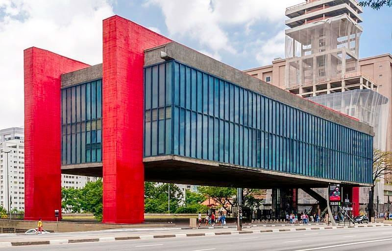

São Paulo
A cidade que nunca dorme
Museu de Arte de São Paulo (Masp)
O Museu de Arte de São Paulo Assis Chateaubriand possui mais de 8 mil peças. Localizado na Avenida Paulista, o espaço destaca pinturas italianas e francesas.
Museu da Arte Sacra de São Paulo

Repleto de exposições, o museu é um importante centro de estudo e conservação de objetos relacionados à arte sacra. Está localizado no Mosteiro da Luz, em São Paulo.